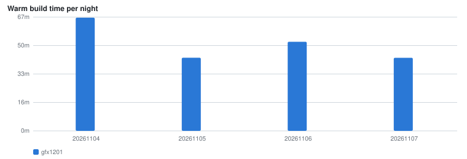

Cold and warm bake invocations on a rented CodeBuild machine, one job per architecture.

| Run | Arch | Cold | Warm | Cost | sccache | Layer cache |
|---|---|---|---|---|---|---|
| 20261107T093741Z | gfx1201 | — | 43m02s | $8.61 | 96% | 0/561 |
| 20261106T102401Z | gfx1201 | — | 52m28s | $10.49 | 64% | 0/567 |
| 20261105T102024Z | gfx1201 | — | 43m05s | — | — | — |
| 20261104T063657Z | gfx1201 | — | 66m40s | — | — | — |